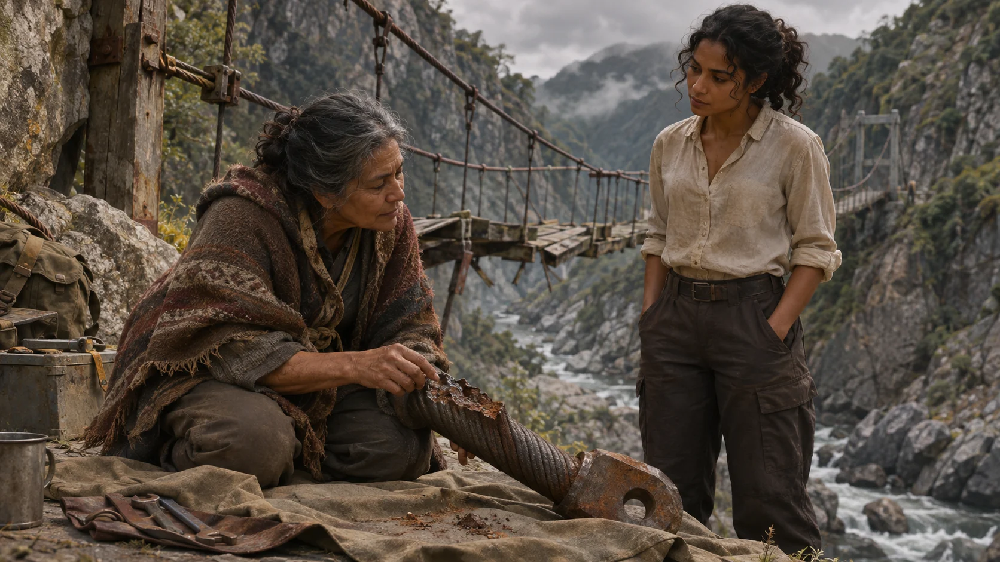
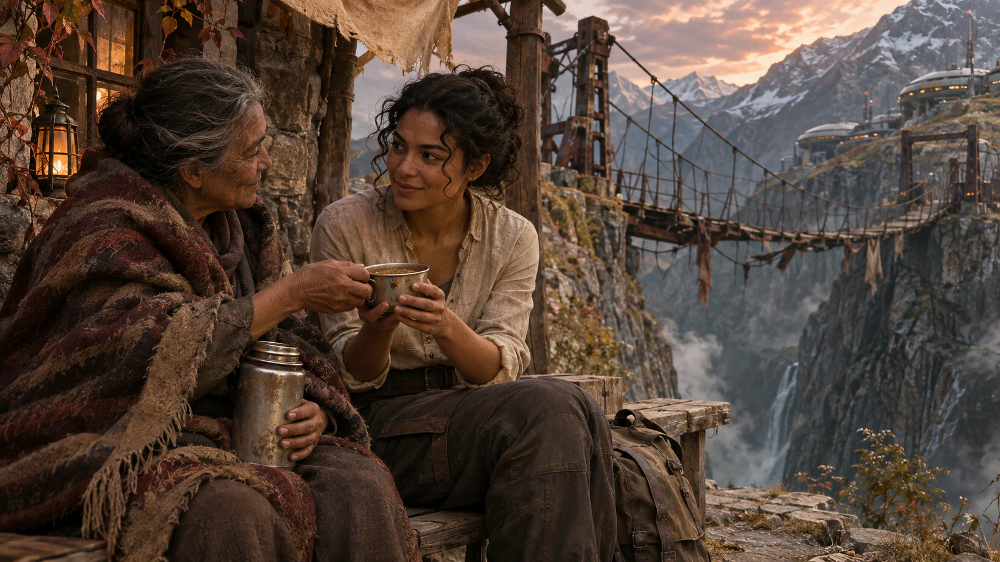
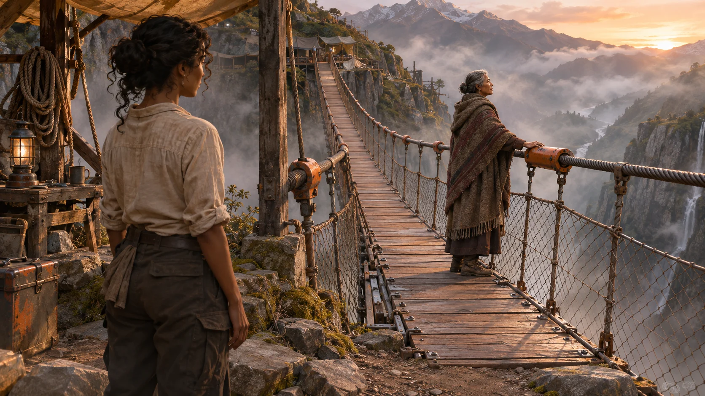

01 · The Line Nobody Could Sign
Tarn Vale town hall · Monday, 08:40
Mayor Cosima Arden had laid the grant papers across the council table in the order she expected to be asked about them. Illuminara read them in that order, and then in the order she preferred, which started with the signature page and worked backwards. Under clause 4.2 the town's own text had been typed in the consultant's wording: We, the people of Tarn Vale, forgive and are reconciled with the builder of our bridge, and ask that the works proceed in that spirit. Fourteen names stood above a blank for the fifteenth.
Cosima ArdenTwelve days since the bridge went. Six until the grant lapses, Sunday at noon, and the Fund doesn't give extensions, it gives the money to the next valley. That money rebuilds the crossing and the clinic road behind it. Four hundred households. I am sorry for Ilse Marchetti's loss. I need her signature.
IlluminaraFourteen people forgave him?
Cosima ArdenTwelve forgave him and two signed to be finished with it. I don't ask which. Ilse is the fifteenth because she is the only next of kin of the four still living in the valley. She spliced wire for the quarry ropeway for twenty-two years before she took the cannery's books, and she has said no to Fenn, no to me, and no to the vicar, in that order. She was polite to the vicar.
Illuminara turned to the second page. The clause required a declaration executed by the Affected Parties as defined in Annex B. There was no Annex B in the town's copy.
IlluminaraWhere is Annex B?
Cosima ArdenFenn called it boilerplate. He wrote the application. He's in the capital until Wednesday.
IlluminaraThen on Wednesday I'd like to read some boilerplate. Today I'd like to see the span, meet the man who built it, and ask Ilse Marchetti a question without a pen in my hand.
Cosima ArdenYou can hold it? The north half?
IlluminaraFor a day at a time. I can't make anyone forgive anyone, and I would be ashamed of myself if I could.
02 · What the Hanger Showed
North abutment, Tarn footbridge · Monday, 14:10
The north span had hung into the gorge for twelve days from its upstream hangers, its two main cables and the stubbornness of the shoring. Hangers ten and eleven on the downstream edge had failed one after the other, and the edge had dropped. Illuminara put her palm on the main cable where it left the saddle and listened with the part of her that could read force. The whole span's weight arrived in her hand as a map of who was carrying whom, and the sag that Anselm Gray's crew had been watching for twelve days stopped.
Gray was sixty-three and stood with a ledger held against his chest, the way a man holds something he expects to be asked for. Thirty metres off, behind the police tape, a woman in a blanket coat watched with her arms folded and did not come closer.
IlluminaraEight and nine are carrying what ten used to. Nine is thin. It will go before your shoring does.
Anselm GrayCut nine first, then eight. Ropes on it.
They cut nine out of the cable clamp in four minutes and laid it on a tarpaulin. The woman crossed the tape then, ignoring the contractor completely, and knelt at the cut end the way a splicer kneels, close enough to smell the wire.
The fracture surface had two colours. Three-quarters of it was a brown crescent, old and rust-edged. The last quarter was bright and grainy, where the wire had finally given.

Ilse MarchettiThat crack was a year old. It looked like a smile for a year. Seven to eleven are the same.
Anselm GrayThe spring report marked seven to eleven due, monitor. I had it in my truck at harvest. A closure would have shut the crossing for nine days and the cannery would have lost its market week. I said after harvest. Four people were on the span on the nineteenth. That's the whole account, and the ledger has the rest.
Ilse MarchettiPhotograph all five, with a rule beside each, before anyone sleeves them. The pictures go to the county inquest. Not to your office.
Anselm GrayYes. The old ledger goes with them, whatever it does to my licence.
He started to put out his hand. It was a movement he had clearly rehearsed and abandoned several times, and it stopped halfway. She did not look at it.
Anselm GrayI've put the yard and the plant behind the bond, and the bond stays open to the families whatever the inquest decides. None of this buys me anything. I'll rebuild to a design you see before the county does, and I'll be off the site when you cross.
Ilse MarchettiYou'll be off it when I cross. I'll decide when.
03 · A Bench at the South Footing
South footing, Tarn footbridge · Tuesday, 15:30
Ilse Marchetti sat the way splicers sit, her hands busy at nothing. She poured a cup from a dented thermos and passed it to Illuminara without asking.
Ilse MarchettiMy brother's recipe. Lentils and whatever was in the drawer.
It was ferociously salty and tasted faintly of tar, and Illuminara discovered, to her considerable surprise, that she was delighted.
IlluminaraThis is the worst soup anyone has ever given me.
Ilse MarchettiHe'd have been so pleased.
Ilse laughed once, short and astonished, and the astonishment shut her face again. Illuminara said nothing and drank the rest of it. The wind came up the gorge and the surviving main cable began to sing, a clean A with something slightly wrong underneath.

Ilse MarchettiMatteo whistled the wrong part. Every time he crossed.
IlluminaraWhat would a true record say?
Ilse MarchettiThat the hangers were cracked for a year and the man knew. That Matteo Marchetti, thirty-eight, rigger, was walking to the night shift at the cannery. Jun Abara. Corrie Vance. Desmond Thule. That they were not lost in an incident. Their names on the new span, cut deep enough to read from the water.
IlluminaraAnd the things you won't do?
Ilse MarchettiI won't shake his hand. I won't sit on a stage while the vicar says peace. I won't write that I forgive him in a town hall because the clinic needs a road.
IlluminaraWill you sign for the bridge?
Ilse's thumb stopped on the thermos lid.
Ilse MarchettiNobody has asked me to sign for the bridge. They've asked me to sign for him.
Illuminara sat very still. It was how she heard the things that rearranged a room.
Ilse MarchettiI've wanted a bridge since the night. One a child can cross. If a page said that I agree to it, that the names go on it, that it's built the way I say, I'd have signed on Monday morning with a fountain pen.
IlluminaraI don't think the sentence about forgiveness came from the Fund. I'd like to find out whose it was. I can't promise you a paper.
Ilse MarchettiI'm not asking for one. I'm asking you not to carry my no to the mayor as a yes.
IlluminaraI'll carry it as exactly what you said.
04 · Clause Nine
Tarn Vale town hall · Wednesday, 11:00
The Fund's programme officer was a voice on the council room's speakerphone, and the voice had spent a long career being careful. Calder Voss had sent Annex B overnight at Illuminara's request. Cosima Arden had printed it twice and underlined nothing, which for the mayor was an act of restraint.
IlluminaraMr Voss, would you read the definition of Affected Party aloud, and then of Accord, and then clause nine point one?
Calder VossAffected Party means the next of kin of any person killed in the failure who still resides in the Vale, and each owner of land the Works cross. The Accord is executed only when every Affected Party has signed. Then: Accord means the consent of each Affected Party to the Works, on the terms stated. And nine point one: If any Affected Party repudiates the Accord within twenty-four months of execution, the Grant is repayable in full.
IlluminaraWhy every one?
Calder VossBecause the Fund won't build over a standing objection. Nine point one is the money's protection against a signature nobody meant.
IlluminaraDoes the Fund ask anywhere for forgiveness?
Calder VossNo. That sentence is the applicant's prose. We ask for consent to the Works.
Arden's pen had stopped moving. Nobody said Fenn's name.
Calder VossI'll be plain, Miss Illuminara. A recorded dissent inside an accord is a flag. My board reads flags.
IlluminaraWhat were they afraid of when they wrote nine point one?
Calder VossHollin Weir. A father signed at the opening ceremony with his daughter's classmates watching. Eight months later he told the newspaper he'd never meant it. The foundations were poured. We clawed the grant back and the bridge sat half built for three years.
IlluminaraSo the signature most likely to be repudiated is one a person gave because the whole town was standing around her. And the one least likely is a page she wrote herself, saying exactly what she does and doesn't agree to.
Calder VossThat's a good argument. It's also exactly what someone would say who wanted the grant to go through.
IlluminaraIt is. Check it against Hollin Weir. Ask what that father would have signed if the page had let him keep his no.
The line hissed for a while.
Calder VossIf her page is her Accord, there is nothing for her to repudiate but her own words. I can put that to my board. Schedule One: her consent to the Works as specified, to the design, the four names and the public inspection record, with her statement that she does not forgive kept in her own words, unedited, as part of the Accord. I'll send the exact wording tomorrow so she reads what her page becomes before I send it up. The board votes Friday at five and I won't promise you the vote. I need two things by noon on Friday: her consent in her own hand, and a design stamped by the county engineer, not by Mr Gray's man.
Cosima ArdenThat sentence was ours. The Fund never asked for it, and I let it stand because it was easy to read out.
She drew a single line through the consultant's sentence and signed her name beside it. Then she crossed the opening ceremony off the page that listed the week.
05 · The Same Smile
Gray's yard, drawing shed · Thursday, 19:20
Gray stood outside the shed door by his own choice, in the cold, with his hat in his hands. Inside, Ilse spread the new drawings under the lamp and read them the way she read wire, from the cut end back.
Ilse MarchettiSame wire. Same eye. Same year of smiling before it lets go.
IlluminaraWhat would you change?
Ilse MarchettiA tell-tale. One bright strand, paint-banded, laid outside the rest so it frays first. Sleeve the eye in orange so any child can see it wear. And the ledger goes in a glass case at the bridge head, not in an office. Anyone who crosses can read what's due.
Anselm GrayThat adds eleven days to the wire order and six thousand to the bill.
Ilse MarchettiThen splice it here. Five hangers. I'll show your crew the lay.
Anselm GrayThere's certified strand in the yard from the south approach job, mill certificates in the drawer. Enough for five if nobody wastes an inch. I'll front the lot under the bond, ahead of the grant. If the Fund walks, that's mine.
She did not look through the door. She spoke to the drawings and the crew chief heard every word, and by nine o'clock six people were laying strands on the shed floor in a pattern Ilse had demonstrated twice with her own hands and refused to demonstrate a third time. Pell, the county engineer, would pull-test a spliced sample at eight the next morning and stamp the lay or not as the sample told him. Ilse had told Gray to tell him that.
Illuminara slid a clean sheet and a pen across the table. She turned to watch the lamp and not the page; it was not hers to read until it was handed over.
The page, when Ilse pushed it back, read: I do not forgive Anselm Gray. I do not have to. I consent to the bridge, built to the design I have seen, with hangers any child can read. Cut their names on it: Matteo Marchetti, Jun Abara, Corrie Vance, Desmond Thule. I. Marchetti.
Beside it Illuminara laid Voss's wording, printed that afternoon. Ilse read it twice with her finger under the line: Schedule One is the signatory's own text and forms part of the Accord. It may not be summarised, edited or paraphrased. Her consent extends to the Works as designed, the four names and the public inspection record, and to nothing else.
Ilse MarchettiChange her to my. Otherwise it says what I said.
IlluminaraThat is the whole thing?
Ilse MarchettiThat's the whole thing. Take it to your man. It's mine. Don't tidy it.
06 · Easing the Load
Tarn footbridge, north span · Friday, 22:40
Voss's message had reached the mayor at ten past six: Board approved 5–2, Schedule One incorporated as written. Funds released on execution. Cosima Arden had read it twice on the bridge approach, and then, with unusual tact, put the phone in her pocket and said nothing more to anyone.
The stamped drawings had gone to the Fund at eleven that morning with Ilse's page clipped to them, Pell's stamp on the lay and the pull-test sheet behind it. Gray's crew had hung the five hangers on his own account since noon, a good six hours before a cent was promised. By night they stood in the work lights, each with its bright outer strand and its orange sleeve. Illuminara held the north span at deck height with her palm on the main cable. Pell stood at the rail with a gauge on every hanger and a load sheet on a board, and he had told the mayor in front of everyone that his signature, not Illuminara's hand, would open the bridge.
IlluminaraI'm going to let it down a tonne at a time. Call each one as it takes its share.
She read each hanger as it came alive. Seven took its load and answered. Eight. Nine, the new nine, hummed so clearly that she felt it through the cable. Ten. Eleven. Pell's gauges and her voice agreed to the tonne at every hanger, and where they might not have agreed he went with the gauges. Gray's crew called the figures and a boy with a clipboard wrote them in the ledger, and at four in the morning the last tonne went across and Illuminara took her hand from the cable and nothing at all fell. Pell signed the sheet and handed it to the mayor without a word.
At ten to six Ilse Marchetti came to the south approach in her blanket coat with her thermos and nobody with her. Gray's truck was parked a hundred metres up the road with its lights off. The mayor had taken the ceremony off the programme herself. The notice board at the bridge head said only: Open at 06:10 on the county engineer's signature. Names to be cut next week.
Ilse walked out alone onto the first of the new deck. At midspan she stopped, put her hand on an orange sleeve, and read the chalk lettering on the rail cap: four names, written by the mason's boy in his best capitals. The wind came up the gorge. The main cable sang its A and its small mistake.

Ilse whistled the mistake, once, a half-note wrong.
Then she crossed to the north bank without turning round. Illuminara watched from the south with the last of the soup and, for once, read no force at all, and only listened.